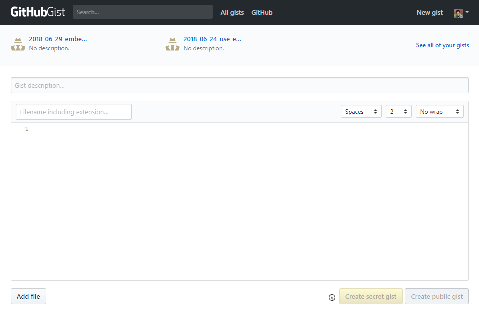
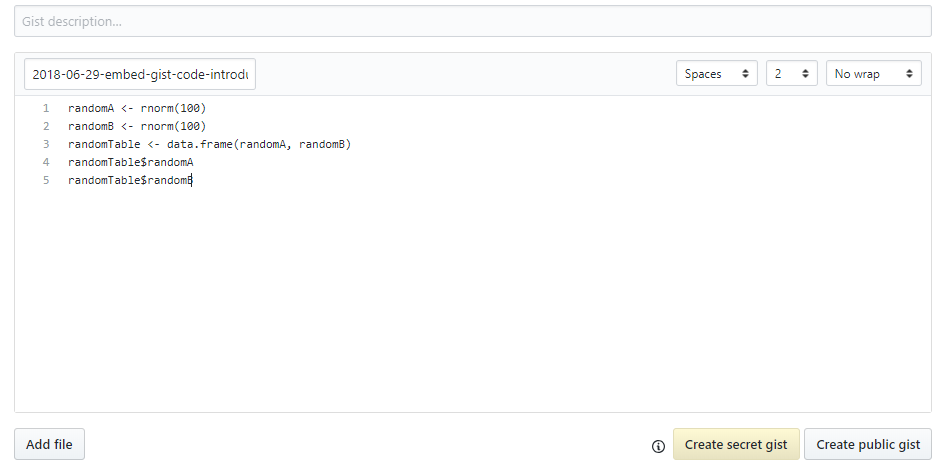
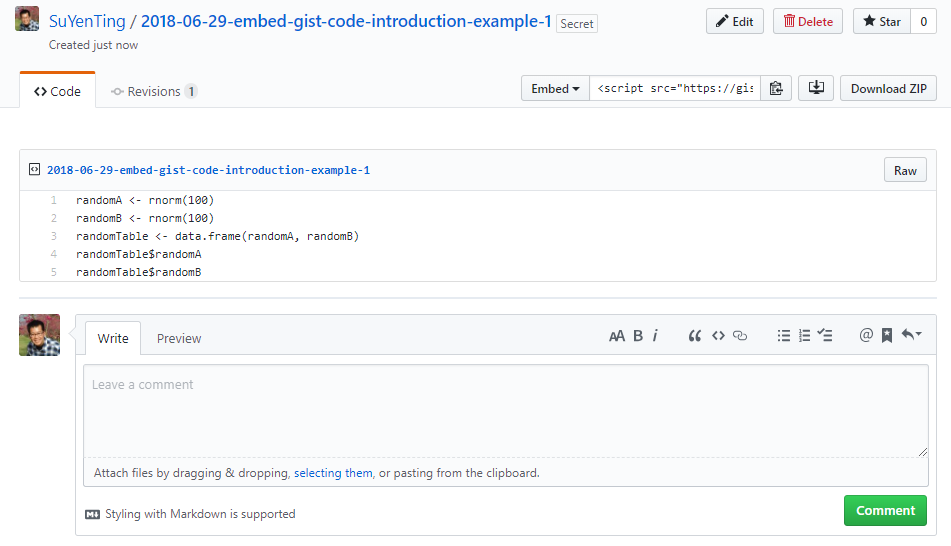
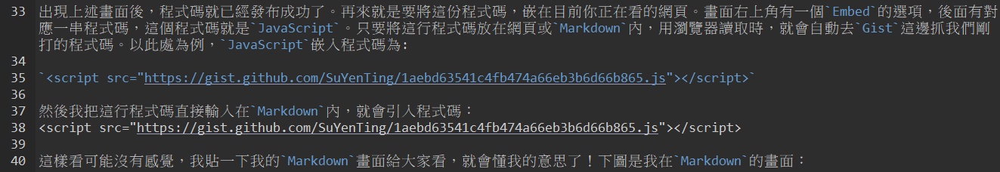
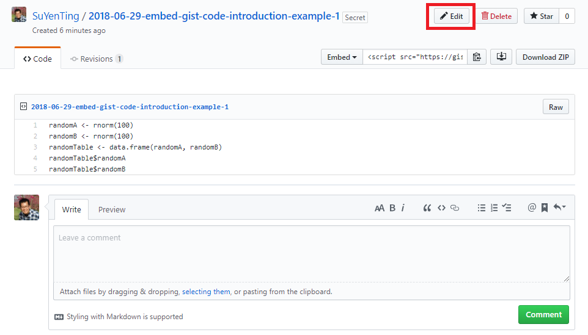
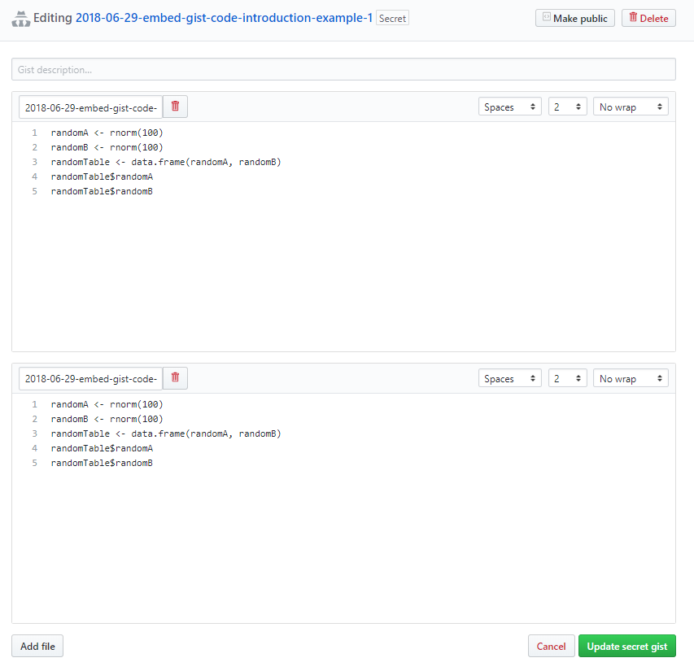
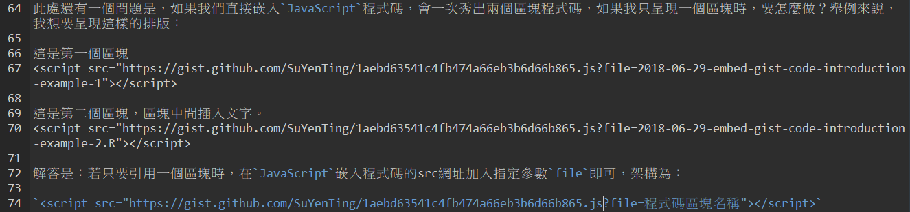

在網頁嵌入Gist程式碼教學
前言
最近在逛別人的程式技術網站時，會發現他們的範例程式碼都特別漂亮。雖然我很努力去理解HUGO的語法，想辦法去調整自己Blog程式碼的顯現方式(後來GOOGLE發現這有專有名詞，叫做程式碼高亮)，但怎麼調都還是醜醜的。後來發現Github有提供一個叫做Gist的服務，可以把程式碼上傳上去，並且提供嵌入網頁的功能，只需要加入一行JavaScript程式碼即可，非常方便。除了上述好處，Gist可以依據副檔名，自動為程式碼上出漂亮的顏色。這樣我就不用再和HUGO奮戰，直接引Gist到Blog來就好。這篇文章將會簡單介紹如何使用Gist加入至Blog內。
如何嵌入程式碼
首先連至Gist(https://gist.github.com/)網站，然後以Github帳號登入。登入後選擇右上角的New gist選項，畫面如下：

接下來把一個簡單的R程式複製貼上來，當然這邊是無法執行跑出結果的，所以我會先在R程式內先確認程式碼是可以跑的。程式碼貼好後記得輸入檔名，畫面如下：

接下來要發佈這份程式碼，此處有兩個選項在畫面下方可以按，分別為Create secret gist及Create public gist。這兩個選項的差異是，選擇Create secret gist，這份程式碼不會被搜尋引擎找到，只有擁有連結的人才能進來看; 若選擇Create public gist，則其他人在用搜尋引擎搜尋時會被找到。此處我習慣點選Create secret gist按鈕，點選後畫面如下：

出現上述畫面後，程式碼就已經發布成功了。再來就是要將這份程式碼，嵌在目前你正在看的網頁。畫面右上角有一個Embed的選項，後面有對應一串程式碼，這個程式碼就是JavaScript。只要將這行程式碼放在網頁或Markdown內，用瀏覽器讀取時，就會自動去Gist這邊抓我們剛打的程式碼。以此處為例，JavaScript嵌入程式碼為:
<script src="https://gist.github.com/SuYenTing/1aebd63541c4fb474a66eb3b6d66b865.js"></script>
Markdown內，就會引入程式碼：
這樣看可能沒有感覺，我貼一下我的Markdown畫面給大家看，就會懂我的意思了！下圖是我在Markdown的畫面：

按照上述步驟，可以發現透過Gist在網頁嵌入程式碼真的是件很簡單的事情！
高亮嵌入程式碼之方法
如果仔細觀察剛從Gist引入的程式碼，會發現程式碼並沒有高亮的感覺，全部都是黑色的字。沒錯，確實就是這樣，沒有高亮！原因是因為我們剛在取檔名時，忘記加上副檔名，所以Gist只會秀黑色的程式碼出來。接下來我做一個對照範例，若要新增新的程式碼，右上方有一個Edit按鈕，點下去即可再次編輯程式碼。

進到編輯畫面後，再點畫面左下方的Add按鈕，新增一個程式碼區塊。第二個程式碼區塊和第一個程式碼區塊是一樣的，但差別是檔名部分，我後面多加一個副檔名.R。處理好後，點選右下方的Update secret gist。

一樣引用JavaScript嵌入程式碼，呈現結果如下：
從上面兩個區塊一比較，可以看出程式碼有明顯的差異吧。第二個區塊再加入副檔名.R後，程式碼瞬間「亮」了起來。Gist透過附檔名的方式，為不同的程式碼進行配色，像如果是HTML程式碼，副檔名.html加上去，就會以HTML程式碼格式來上色; 如果是Python程式碼，副檔名.py加上去，就會以Python程式碼格式來上色。
此處還有一個問題是，如果我們直接嵌入JavaScript程式碼，會一次秀出兩個區塊程式碼，如果我只呈現一個區塊時，要怎麼做？舉例來說，我想要呈現這樣的排版：
解答是：若只要引用一個區塊時，在JavaScript嵌入程式碼的src網址加入指定參數file即可，架構為：
<script src="https://gist.github.com/SuYenTing/1aebd63541c4fb474a66eb3b6d66b865.js?file=程式碼區塊名稱"></script>
上面區隔兩塊的程式碼，在我的Markdown內的程式碼寫法為：

結語
以上是Gist嵌入網頁的簡單說明。另外要補充一點的是，因為這份文章是按部就班的寫，在文章高亮嵌入程式碼之方法部分有加入第二個區塊的程式碼，所以會導致最開始講解的如何嵌入程式碼部分，引用的JavaScript嵌入程式碼呈現的結果會不一樣，會從一個區塊變成兩個區塊。因此實際上我是有透過file來指定區塊。但為初學者方便學習，所以此處就不修改。以上就是Gist在網頁嵌入程式碼的教學，謝謝大家！